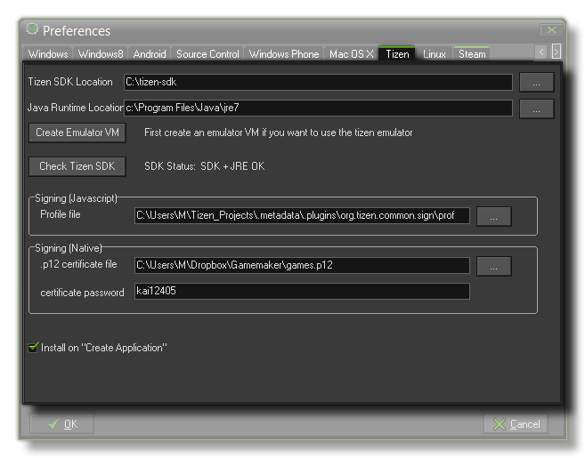

 The first thing to do
before starting to test or create a Tizen game, is to set up this
section of the preferences for the Tizen module. You must have the
Tizen SDK installed (see the page on Installation)
which you would then "point" to from the file dialogue labelled
Tizen SDK Location. Apart from the SDK you will also need to
link to the Java Runtime Location as the Tizen SDK requires
this.
Once you have located the necessary files, you should proceed to
Check the Tizen SDK by pressing the appropriate button on
this tab, as this will get GameMaker: Studio to check that
the components are installed and communicating with the program
properly. If this shows "SDK + JRE OK" then you can begin to
test your games on the Tizen target platform.
If your development setup permits the creation of a virtual Tizen
device, you should also press the Create Emulator VM to
initialize the Tizen emulator and create a "template" of the
GameMaker: Studio virtual Tizen device, otherwise your game
will not run correctly (if at all).
You can add the signing certificate that the Tizen SDK generates.
This is not necessary for testing the JS (Web) Tizen module or even
for creating a final *.wgt file, but without it your game
will not be accepted onto the official Tizen Store. If you are
compiling to the Native module, then the *.p12 file is
essential as without it your game will not compile. Further
information on setting up the Tizen module and acquiring the
necessary files can be found on the YoYo
Games Helpdesk.
Finally, there is an option to "Install on Create
Application", which you can check to have the game install
automatically on any Tizen device that is connected to your
development PC when you create a final build of your game.
| Converted from CHM to HTML with chm2web Standard 2.85 (unicode) |